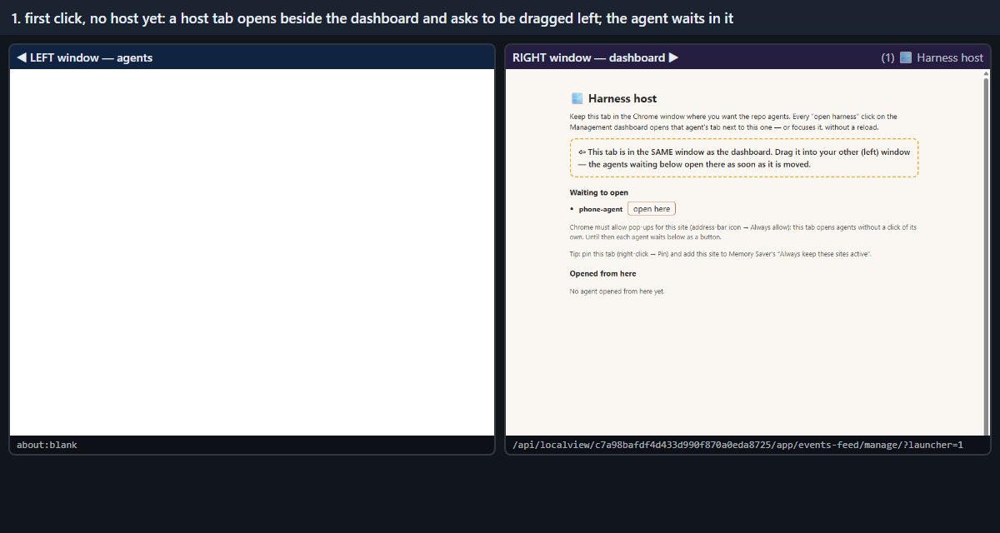
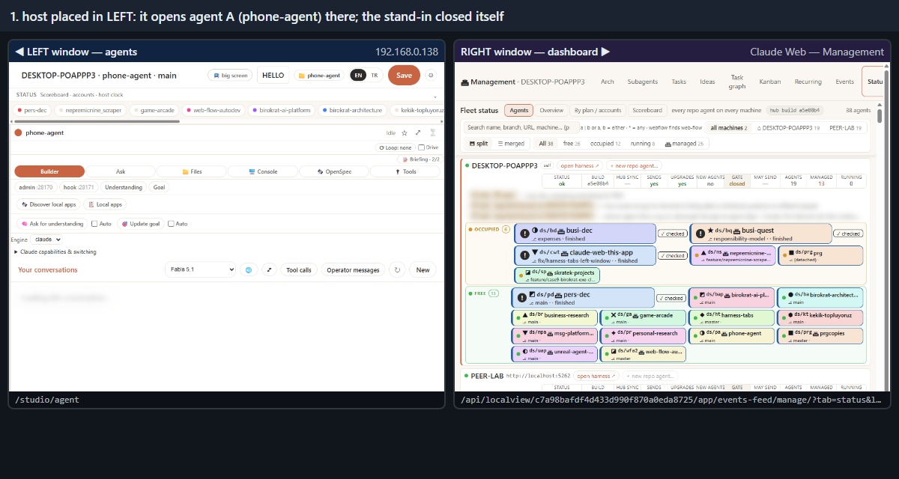
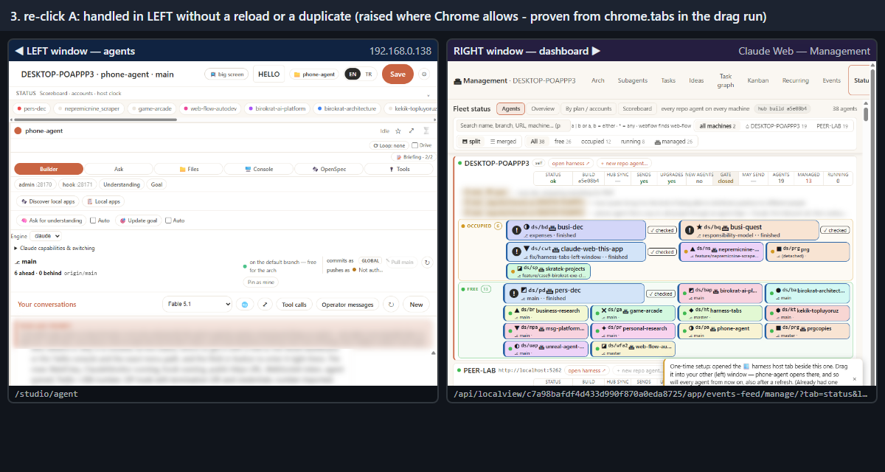
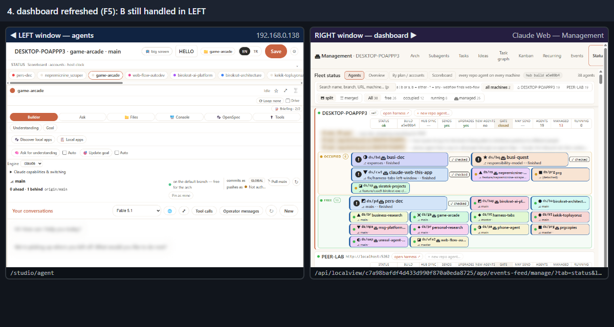
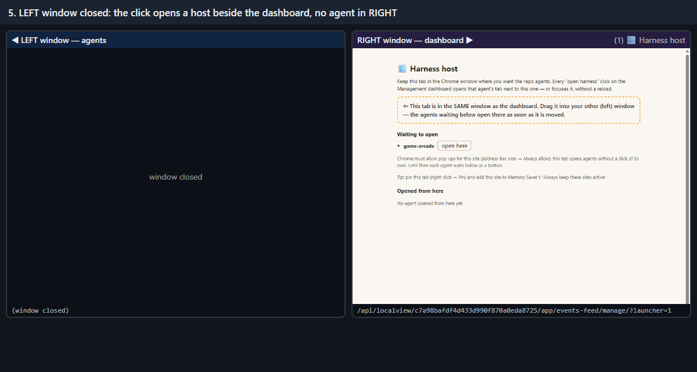
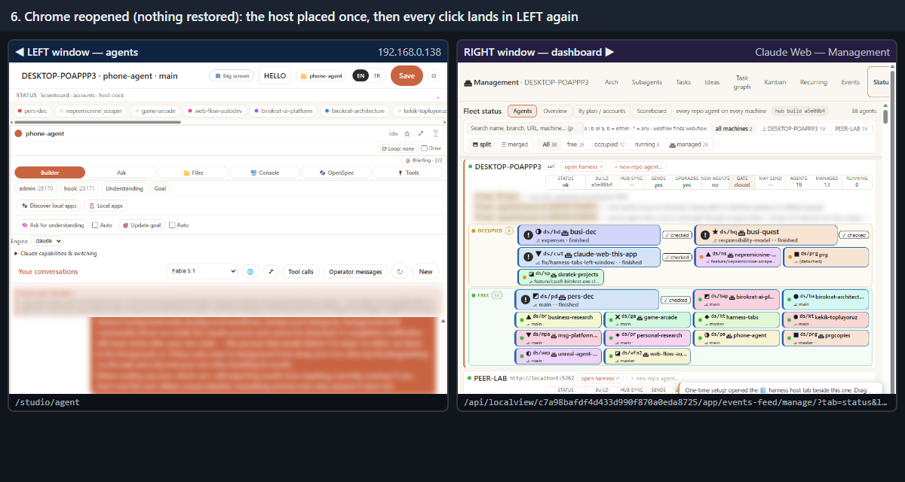

The answer in one screen
Root causeThe dashboard found its "launcher" tab in the other window by a window name. When the dashboard reloads after an error page (which is what a harness restart does to it), Chrome puts it in a new browsing-context group. The name then finds nothing, the lookup makes a blank tab in the dashboard's window, and every agent follows it there.
The fixA small 🪟 harness host tab lives in the left window. The dashboard talks to it over a same-origin
BroadcastChannel: no names and no handles, so nothing a refresh can break. The host opens each agent tab next to itself.The guardTabs of one Chrome window share the same screen rectangle. A host that is still in the dashboard's window only queues the agent and says "drag me left". An agent is never opened in the dashboard's window.
| Situation | Before | Now |
|---|---|---|
| 3 agents clicked | left only while the launcher link held | left, always |
| dashboard refreshed (F5) | left | left |
| dashboard reloaded after an error page (harness restart / redeploy) | dashboard's window | left |
| dashboard opened in a new tab | dashboard's window | left |
| left window closed | dashboard's window | a host appears beside the dashboard asking to be placed; no agent opens there |
| Chrome reopened | dashboard's window | host restored by "Continue where you left off", or placed once again |
| pop-ups blocked | fell back to the dashboard's window | the agent waits as a button in the host; the toast says to allow pop-ups once |
| re-click an open agent | raised (while the link held) | switched without a reload; raised where Chrome allows it, and the toast says so when it can't |
29/29real Chrome on the hub, two windows, local + remote harnesses
10/10 ×3the drag flow, with Chrome's own active-tab list as ground truth for "raised"
293/293client unit tests, 12 of them new for the host
Every earlier attempt, and exactly why it failed
| PR / change | Mechanism | What it got right | Why the tab still went to the dashboard's window |
|---|---|---|---|
| #109 / #110 kanban-worker-window | one named worker tab, window.open(url, 'birocode-worker') | reuse by name; survives F5 | A named tab is born in the opener's window, the dashboard's. A page can't choose a window. |
| agent tabs (follow-up) | one named tab per agent | focus-without-reload | Same: new tabs are born beside the dashboard. |
| #123 management-settings-tab | "dedicated window" with left/top/width/height features + screen picker | a separate window | Features make a popup window, which cannot hold tabs. It was also not the default: "tabs in this window" stayed the default. |
| #124 harness-window-agent-tabs | a launcher tab in the other window; the dashboard keeps its JS handle and finds it by name; the launcher opens agent tabs | the right idea: a page in the left window does the opening | The handle dies on every reload. The name lookup only works inside one browsing-context group, which Chrome replaces after an error-page reload and which never contains a launcher opened by hand. The lookup then made a blank tab in the dashboard's window and turned it into the launcher. Blocked or missing launcher meant opening beside the dashboard on purpose. |
| #125 harness-window-reclick-raise | the dashboard raises an existing agent tab by name from its click | what really raises a tab | The same name-lookup fragility. Kept in this fix as the raise step, with a guard against stray tabs. |
Measured, not guessed (real Chrome)
| What the dashboard did before looking the launcher up by name | Launcher still found? |
|---|---|
| F5 reload | yes |
| typed the same URL again | yes |
| reload hit an error page (harness down), then loaded again | yes |
| navigated after an error page (what Chrome does when the harness comes back) | NO, so a blank tab in the dashboard's window |
| launcher opened by hand in the other window | NO, never |
Scripts: .claudeweb-preview/playwright/check-left-window.mjs, check-left-window-reload.mjs.
What a normal web page can and cannot control about Chrome windows
| Wish | Possible from a page? | Consequence for us |
|---|---|---|
| list Chrome's windows / put a tab into another window | no (an extension power: chrome.windows, chrome.tabs) | a page living in the left window must do the opening |
| choose the window of a tab it opens | no | tabs land in the opener's window |
| create a new normal window | no | features make a popup window that cannot hold tabs |
| find a tab by name | only in its browsing-context group | not a foundation; used only for the raise |
| talk to every same-origin tab | yes: BroadcastChannel | the foundation |
| open a tab without the user's click | only with "Pop-ups: Allow" for the site | a one-time step, remembered across restarts |
| bring another tab to the front | only from the clicked page, by name, within its group | the dashboard raises; the host can't |
| know which window it is in | indirectly: the window rectangle | the "am I beside the dashboard?" guard |
Options weighed
| (a) re-acquire the named launcher | (b) BroadcastChannel host ✔ | (c) Chrome extension | (d) Windows-level placement | |
|---|---|---|---|---|
| dashboard refresh | F5 yes | yes | yes | yes |
| harness restart / error page | no | yes | yes | yes |
| Chrome restart | no | restored, or one placement | yes | yes |
| raise every time | while linked | where Chrome allows | yes | yes |
| install / upkeep | none | pop-ups allowed once | load-unpacked on every Chrome, developer mode, a bridge every page can drive | Windows only; you rejected it |
Chosen: (b). Placement becomes deterministic with nothing to install. The extension remains the upgrade if a raise on every re-click ever matters more than installing and maintaining an extension.
Walk through it: what happens on each click
◀ LEFT window, agents
RIGHT window, dashboard ▶
Click an agent.
The conversation over BroadcastChannel('birocode-harness-host')
| Outcome | Toast | Opens in dashboard window? |
|---|---|---|
| left-opened | Opened X in the harness window. | no |
| left-focused | Switched to X in the harness window. | no |
| left-steered | X's tab shows the agent now; this click could not bring it to the front. | no |
| left-queued | The host tab is still in THIS window: drag it left. | no |
| host-created | One-time setup: drag the host tab into your left window. | only the host itself |
| left-blocked / host-blocked | Allow pop-ups for this site once. | no |
Real Chrome on the hub: two windows, local + remote harnesses






Checks
| # | Check | Result |
|---|
Conversation text is blurred in the lab screenshots. Captures are page screenshots only. The full GIF is in docs/screenshots/harness-tabs-left-window/leftwin.gif.